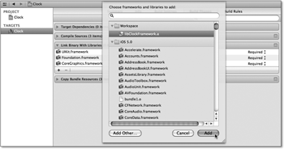

Zum Online-Shop
Zum Online-Shop
7.2 Das Buildsystem
Mit Xcode 4 hat Apple das integrierte Buildsystem gegenüber den Vorgängerversionen stark verändert und die Benutzung vereinfacht. Das Buildsystem sorgt dafür, dass aus den Quelldateien Ihrer Projekte die gewünschten Produkte entstehen. Die häufigsten Produkte sind natürlich Programme, aber Xcode kann auch Programmbibliotheken, Testrunner oder beliebige andere Dateien und Verzeichnisse aus den Quelldateien erzeugen.
7.2.1 Workspaces, Projekte und Targets
Ein Projekt enthält alle notwendigen Daten, um Produkte zu erstellen. Da sind zum einen natürlich die Dateien mit dem Quellcode, Storyboards oder XIB-Dateien, Bilder, Sounds usw. Zum anderen enthält das Projekt noch Targets. Dabei fasst ein Target oder auch Ziel die Regeln und Einstellungen für jeweils ein Produkt zusammen. Über die Konfigurationen kann das Projekt dabei Einstellungen für die enthaltenen Targets vorgeben, die aber jedes Target auch überschreiben kann. Außerdem enthält das Projekt noch Schemata, über die Sie Targets und weitere Aktionen ausführen lassen können. Sie können mehrere Projekte in einem Workspace zusammenfassen. Diese Struktur stellt Abbildung 7.7 dar.
In der Regel fassen Sie in einem Workspace voneinander abhängige Projekte zusammen. Ein typisches Beispiel dafür ist ein Projekt für ein Programm und ein oder mehrere Projekte für die benutzten Bibliotheken. Zwischen den Targets der verschiedenen Projekte können Sie Abhängigkeiten definieren. So darf Xcode beispielsweise erst das Programm erzeugen, wenn es alle Bibliotheken erstellt hat.
Abbildung 7.7 Die Komponenten des Buildsystems
Die Projekte in einem Workspace verwenden außerdem den gleichen Symbolindex. Dieser erlaubt Ihnen bei abhängigen Projekten auch ein Debuggen in den Quellen der verschiedenen Projekte.
7.2.2 Klassen in Bibliotheken auslagern
Um den Umgang mit Workspaces zu veranschaulichen, sollen Sie im Folgenden schrittweise das Projekt Clock von der beiliegenden DVD in eine Bibliothek und eine Applikation aufteilen. Legen Sie dazu eine Kopie des Projekts auf Ihrer Festplatte an, und öffnen Sie diese Kopie. Führen Sie ruhig das Programm einmal im Simulator aus, um sich zu vergewissern, dass die Kopie vollständig ist.
Zunächst müssen Sie zu dem Projekt einen Workspace erzeugen, wozu Sie den Menüpunkt File · Save as Workspace... aufrufen. Speichern Sie den Workspace unter dem Namen ClockWorkspace in dem Ordner ab, der den Ordner des Projekts enthält. Nach dem Speichern hat sich in der Anzeige nicht viel verändert. Lediglich die Werkzeugleiste zeigt den Namen des Workspace mit einem Icon an (siehe Abbildung 7.8). Außerdem hat Xcode die Datei ClockWorkspace.xcworkspace angelegt.
Abbildung 7.8 Anzeige des Workspace in der Werkzeugleiste
Für die Bibliothek müssen Sie ein eigenes Projekt anlegen. Klicken Sie dazu mit der rechten Maustaste auf das Clock-Projekt im Navigationsbereich von Xcode, und wählen Sie den Punkt New Project... aus. Als Vorlage für die Bibliothek verwenden Sie Cocoa Touch Static Library und Framework & Library (siehe Abbildung 7.9). Das neue Projekt speichern Sie im gleichen Ordner wie die Workspacedatei.
Abbildung 7.9 Anlegen einer statischen Bibliothek
Nach dem Anlegen enthält das ursprüngliche Clock-Projekt ein Subprojekt für die Bibliothek (siehe Abbildung 7.10).
Abbildung 7.10 Struktur des Projekts nach Anlegen des Subprojekts
Das Subprojekt enthält die Klasse ClockFramework, die Sie nicht brauchen und deshalb löschen können. Stattdessen fügen Sie die Klasse ClockView zum Bibliotheksprojekt hinzu, indem Sie über einen Rechtsklick auf die Gruppe ClockFramework die Dateien hinzufügen. Achten Sie beim Einfügen darauf, dass Xcode die Dateien auch kopiert (siehe Abbildung 7.11).
Abbildung 7.11 Kopieren der Dateien in das Bibliotheksprojekt
Danach können Sie diese Dateien aus dem Clock-Projekt löschen, indem Sie die Dateien auswählen und die Entfernen- oder Löschtaste drücken. Da Sie diese Dateien ja bereits kopiert haben, können Sie die Dateien ruhig endgültig löschen (siehe Abbildung 7.12).
Abbildung 7.12 Endgültiges Löschen der Dateien
Wenn Sie das Projekt übersetzen lassen, erhalten Sie mit Xcode 4.0 keine Fehlermeldung. Unter Xcode 4.2 erhalten Sie hingegen diese Fehlermeldung:
Automatic Reference Counting Issue
ARC forbids explicit message send of 'dealloc'
Das liegt daran, dass die aktuelle Version der IDE bei neuen Projekten automatisches Referenzenzählen voreinstellt. Die Klasse ClockView enthält aber keinen ARC-kompatiblen Code. Sie können entweder die Klasse entsprechend modifizieren oder alternativ den Compiler auf das manuelle Referenzenzählen umstellen. Bei der ersten Variante brauchen Sie nur die letzte Zeile aus dealloc zu entfernen. Auch bei größeren Projekten sollten Sie dieses Vorgehen bevorzugen, da ab iOS 5 das automatische Referenzenzählen das Standardvorgehen für die Speicherverwaltung ist.
Wenn Sie trotzdem lieber den Compiler zum manuellen Referenzenzählen überreden möchten, müssen Sie das Projekt für die Bibliothek auswählen und den Reiter Build Settings öffnen. Dort finden Sie eine umfangreiche Liste mit Einstellungen. Um das passende Feld zu finden, geben Sie wie in Abbildung 7.13 in das Suchfeld oben links das Wort »Automatic« ein. Xcode zeigt dann nur die Einstellungen an, die auf diesen Begriff passen.
Abbildung 7.13 Einstellung für das automatische Referenzenzählen
Führen Sie einen Doppelklick auf der Zeile Objective-C Automatic Reference Counting aus, und geben Sie als neuen Wert NO ein. Dadurch schalten Sie das automatische Referenzenzählen aus. Jetzt sollten Sie das Projekt auch mit Xcode 4.2 übersetzen und ausführen können. Bei der Ausführung zeigt das Programm aber keine Uhren an. Stattdessen finden Sie in der Konsole folgende Nachricht:
Unknown class ClockView in Interface Builder file.
Das Programm findet also die Klasse ClockView nicht. Da es sie aber erst zur Laufzeit braucht, fällt das bei der Übersetzung nicht weiter auf. Da Sie die Klasse in eine Bibliothek ausgelagert haben, müssen Sie diese Bibliothek in das Programm einbinden. Dazu wählen Sie das Target des Programms aus und öffnen unter dem Reiter Build Phases die Phase Link Binary With Libraries. Klicken Sie auf den Plus-Button in der Phase, um die Bibliothek zu dem Target hinzuzufügen. Dazu wählen Sie sie im Dialog aus und klicken auf den Button Add (siehe Abbildung 7.14).
Abbildung 7.14 Hinzufügen einer Bibliothek
Aber auch durch das Hinzufügen findet das Programm die Klasse nicht. Sie steht zwar beim Linken zur Verfügung, aber der Linker weiß nicht, dass sie auch gebraucht wird. Da er sich streng an den sechsten Artikel des Kölschen Grundgesetzes »Kenne mer nit, bruche mer nit, fott domet.« [34](»Kennen wir nicht, brauchen wir nicht, fort damit.«) hält, schmeißt er die sorgsam importierte Klasse einfach weg. Glücklicherweise ist aber der Linker wie auch der Kölner ein an und für sich toleranter Zeitgenosse [35](Zumindest in seiner Selbsteinschätzung – Westfalen sehen das häufig anders.), der sich durch den Schalter –ObjC (beziehungsweise ein paar Kölsch) leicht umstimmen lässt.
Um dieses Flag an den Linker zu bringen, wählen Sie das Clock-Projekt aus und öffnen den Reiter Build Settings. Als Suchbegriff verwenden Sie diesmal »Linker« (siehe Abbildung 7.15).
Abbildung 7.15 Eingabe eines Linkerflags
In der Mitte der Liste finden Sie nun die Einstellung Other Linker Flags. Wählen Sie diese Zeile aus, und klicken Sie einmal in deren rechten Bereich. Dadurch können Sie den Wert dieser Einstellung verändern. Geben Sie dort »-ObjC« ein, und beenden Sie die Eingabe durch Drücken des Zeilenvorschubs. Wenn Sie nun die App erstellen und ausführen lassen, sehen Sie die Ziffernblätter auf dem Bildschirm.
Sie haben durch diese Schritte die Klasse ClockView in eine statische Bibliothek ausgelagert. Sie können das überprüfen, indem Sie im Organizer das Icon Projects auswählen. Dort finden Sie in der linken Spalte neben Ihren Projekten auch den eben erstellten Workspace. Wenn Sie ihn auswählen, zeigt Xcode Ihnen unter Derived Data den Pfad zu den Ausgabedateien an. Sie können den Pfeil neben dem Pfad anklicken, um das Verzeichnis im Finder zu öffnen (siehe Abbildung 7.16). In diesem Ordner befinden sich die Unterorder Build/Products/Debug-iphonesimulator und/oder Build/Products/Debug-iphoneos, in denen Sie jeweils drei Dateien finden:
- Das Programm befindet sich in der Datei Clock.
- Die Datei Clock.app.dSYM enthält Symbole für den Debugger.
- Die dritte Datei libClockFramework.a ist schließlich die statische Bibliothek. Unter UNIX ist es üblich, dass statische Bibliotheken das Präfix lib und die Dateiendung .a haben.
Abbildung 7.16 Öffnen des Ausgabeverzeichnisses
7.2.3 Bibliotheken wiederverwenden
Jetzt haben Sie die Klasse erfolgreich in eine Bibliothek ausgelagert. Für ein einzelnes Projekt ist das natürlich wenig sinnvoll. Aus diesem Grund legen Sie jetzt ein weiteres Projekt an. Klicken Sie dazu mit der rechten Maustaste in den grauen Bereich der Navigationsspalte, und wählen Sie aus dem Kontextmenü den Punkt New Project... aus. Wählen Sie die Vorlage Single View Application, und speichern Sie das Projekt unter dem Namen SecondClock im gleichen Verzeichnis wie die Workspacedatei und das andere Programmprojekt ab. Falls Sie Xcode 4.2 verwenden, wählen Sie die Option Use Storyboard aus.
Im Storyboard legen Sie einen View mit der Klasse ClockView an. Obwohl das neue Projekt noch nicht die Bibliothek importiert hat, bietet Ihnen der Identitätsinspektor bereits diese Klasse an, und auch beim Übersetzen erhalten Sie keine Fehlermeldung. Aber das Programm zeigt wieder keine Uhr. Stattdessen zeigt die Konsole die Nachricht
Unknown class ClockView in Interface Builder file.
an.
Zunächst müssen Sie das Bibliotheksprojekt als Subprojekt des neuen Projekts festlegen. Ziehen Sie dazu mit gedrückter Maustaste das Bibliotheksprojekt auf das neue Projekt (siehe Abbildung 7.17).
Abbildung 7.17 Hinzufügen eines Subprojekts
Verwenden Sie die gleichen Optionen wie in Abbildung 7.18. Durch die Einstellung Create groups for any added folders legt Xcode nur interne Verweise und keine Kopien für das Subprojekt an.
Abbildung 7.18 Optionen für das Subprojekt
Analog zum Hauptprojekt Clock fügen Sie die Bibliothek zum neuen Projekt hinzu (siehe Abbildung 7.14) und setzen in den Buildsettings das Linkerflag (siehe Abbildung 7.15). Nach diesen Änderungen zeigt Ihnen die App auch das Ziffernblatt mit den Zeigern an.
| »Oh we got both kinds. We got Country and Western.« |
|
Vielleicht ist Ihnen aufgefallen, dass Sie diesmal nicht das automatische Referenzenzählen ausschalten sollten. Trotzdem übersetzt Xcode Ihren Code, und das Programm läuft. Das ist auch kein Problem und so vorgesehen. Sie können Projekte mit automatischem und manuellem Referenzenzählen problemlos auf der Objektcodeebene[36](Das sind Bibliotheken und die übersetzten Dateien, die der Compiler erzeugt.) mischen. Da das aber nicht auf der Quellcodeebene geht, sehen Sie an diesem Beispiel auch, dass die Projekte die Klasse ClockView tatsächlich aus der Bibliothek libClockFramework.a laden. |
Zwar ist der Anblick einer stehenden Uhr zeitlos schön, aber eine laufende Uhr ist im Allgemeinen sinnvoller. Um sie zu starten, ziehen Sie wie in Kapitel 3 beschrieben eine Outletverbindung vom View in die Deklaration des Viewcontrollers. Außerdem importieren Sie die Headerdatei ClockView.h in die Headerdatei des Controllers, wie in Listing 7.1 gezeigt wird.
#import <UIKit/UIKit.h>
#import "ClockView.h"
@interface SecondClockViewController : UIViewController
@property (strong, nonatomic) IBOutlet ClockView *clockView;
@end
Listing 7.1 Headerdatei des Viewcontrollers
Allerdings zeigt Ihnen Xcode neben der Importanweisung für die Uhrenklasse einen Fehler an, und übersetzen können Sie das Projekt jetzt auch nicht mehr. Das liegt daran, dass Sie zwar die Bibliothek eingebunden haben, Ihre Projekte für die Programme aber nicht wissen, wo sie die Headerdateien zu der Bibliothek finden.
Um dieses Problem zu beseitigen, öffnen Sie wieder den Reiter Build Settings des Projekts SecondClock. In das Suchfeld geben Sie den Begriff »Header« ein und geben für die Einstellung Header Search Paths den Pfad ../ClockFramework/ClockFramework ein (siehe Abbildung 7.19).
Abbildung 7.19 Suchpfade für Headerdateien anpassen
Damit fügen Sie einen relativen Suchpfad für die Headerdateien zu dem Projekt hinzu, da Sie die Lage des Verzeichnisses bezogen auf das Projektverzeichnis angegeben haben. Das Projektverzeichnis ist der Ordner, der die Datei SecondClock.xcodeproj enthält. Dabei verweisen die beiden Punkte am Anfang des Pfades auf das Oberverzeichnis des Projektverzeichnisses. Nach dieser Änderung können Sie das SecondClock-Projekt wieder übersetzen und ausführen.
7.2.4 Konfigurationen
Häufig soll sich der Programmcode für die Entwicklung von dem für den App-Store unterscheiden. Beispielsweise soll der Compiler den Code für die Veröffentlichung optimieren. Für die Entwicklung ist hingegen ein unoptimierter Programmcode mit Debuginformationen geeigneter, da der Compiler beim Optimieren die Reihenfolge von Programmanweisungen verändern kann.
Vielleicht ist Ihnen bei den Änderungen an den Projekteinstellungen aufgefallen, dass Sie jede Einstellung aufklappen können. Sie finden darin jeweils die zwei Unterpunkte, mit denen Sie die Einstellungen für die Entwicklung (Debug) und Veröffentlichung (Release) getrennt festlegen können. Die Namen der beiden Unterpunkte bezeichnen die Konfigurationen, die das Projekt enthält. Xcode erzeugt die beiden Konfigurationen Debug und Release automatisch, wenn Sie das Projekt anlegen.
| Copy-King Karl |
|
Sie können zu Ihrem Projekt weitere Konfigurationen hinzufügen, indem Sie die bestehenden kopieren. Dazu wählen Sie das Projekt aus und öffnen den Reiter Info. Unter der Rubrik Configurations finden Sie alle bestehenden Konfigurationen. Über den Plus-Button können Sie Ihr Projekt um weitere Konfigurationen erweitern. Das ist aber nur in seltenen Fällen notwendig, da in der Regel die zwei Standardkonfigurationen für ein Projekt ausreichen. |
In der Regel haben beide Konfigurationen die gleichen Einstellungen, und es gibt nur wenige Unterschiede. Die Einstellung Optimization Level ist ein typisches Beispiel für unterschiedliche Werte für die Entwicklung und die Veröffentlichung (siehe Abbildung 7.20). Für die Entwicklung verwendet der Compiler die Optimierungsstufe 0 – also keine Codeoptimierung. Für die Veröffentlichung benutzt er hingegen die Stufe s, die einen möglichst kurzen Code erzeugt.
Sie können das Verhalten Ihres Programms ebenfalls von der benutzten Konfiguration abhängig machen. Dazu verwenden Sie ein Präprozessormakro, über das Sie Teile des Codes ein- oder ausblenden können. Ein typisches Beispiel sind Logmeldungen, die nur die Entwicklungsversion ausgibt. Das können Sie über das Makro DEBUG realisieren, das nur die Debug-Konfiguration setzt.
Abbildung 7.20 Einstellungen für die bedingte Übersetzung
| Die Qual der Wahl |
|
Wie Sie gesehen haben, bietet Ihnen Xcode eine Fülle von Einstellungen an. In den meisten Fällen brauchen Sie diese Werte aber nicht zu verändern, da Apple hier schon sinnvolle Werte voreingestellt hat. Wenn Sie eine Änderung vornehmen, sollten Sie aber genau wissen, was Sie tun. |
Um das ClockFramework in beiden Apps verwenden zu können, mussten Sie in den Konfigurationen beider Projekte die Einstellungen anpassen. Bei einer Bibliothek mit mehreren Einstellungen, die Sie in viele Projekte einbinden möchten, kann das aber sehr lästig sein. Sie können als Basis für Ihre Projekte und Targets auch eigene Basiskonfigurationen festlegen.
Legen Sie dazu über den Menüpunkt File · New · New File... eine neue Konfigurationsdatei an. Als Vorlage verwenden Sie Configuration Settings File, die Sie in der Rubrik Other unter iOS finden. Wählen Sie den Dateinamen ClockFramework und als Gruppe ClockWorkspace aus. Außerdem schalten Sie die Zugehörigkeit zu allen Targets über die Checkboxen aus (siehe Abbildung 7.21).
Abbildung 7.21 Anlegen der Konfigurationsdatei
Xcode legt die neue Datei in der obersten Ebene in der Navigationsspalte ab. Wenn Sie die Datei öffnen, sehen Sie, dass es sich um eine einfache Textdatei handelt. Schreiben Sie die folgenden Zeilen an das Ende dieser Datei:
HEADER_SEARCH_PATHS = ../ClockFramework/ClockFramework
OTHER_LDFLAGS = -ObjC
Listing 7.2 Konfigurationsdatei mit Basiseinstellungen
Das sind genau die Einstellungen, die beide Applikationen brauchen, um die Bibliothek zu verwenden. Als Nächstes fügen Sie die Datei zu Ihrem Clock-Projekt über einen Rechtsklick auf das Projekt und den Menüpunkt Add Files to "Clock"... hinzu. Schalten Sie dabei aber die Option Copy items to destination group’s folder (if needed) und alle Zugehörigkeiten zu den Targets über die entsprechenden Checkboxen aus.
Als Nächstes legen Sie diese Konfigurationsdatei als Basis des Clock-Projekts fest. Dazu wählen Sie im Projekt den Reiter Info aus und klappen über die Dreiecke die beiden Konfigurationen Debug und Release in der Rubrik Configurations auf. Durch Anklicken der Doppelpfeile in der Spalte Based on Configuration File können Sie nun die neu angelegte Konfigurationsdatei als Basis auswählen (siehe Abbildung 7.22).

Abbildung 7.22 Festlegen der Basiskonfiguration
Öffnen Sie nun den Reiter Build Settings, und suchen Sie die Einstellung »Other Linker Flags« über das Suchfeld. Xcode stellt die Zeile in fetter Schrift dar, weil Sie den Standardwert überschrieben haben. Die Einstellung hat immer noch den Wert –ObjC. Wählen Sie die Zeile aus, ohne die Texteingabe zu aktivieren, und drücken Sie die Löschtaste. Dadurch entfernen Sie den Wert. Xcode zeigt die Zeile jetzt in normaler Schrift an, die immer noch den Wert –ObjC hat. Das Projekt verwendet jetzt die Einstellung aus der neuen Konfigurationsdatei. Löschen Sie außerdem den Wert für die Einstellung Header Search Paths auf die gleiche Weise.
Wenn Sie das nicht glauben, können Sie das ganz einfach überprüfen, indem Sie die Schritte vertauschen. Löschen Sie also im SecondClock-Projekt zuerst die beiden Einstellungswerte. Beide Felder enthalten dadurch keine Werte mehr. Danach fügen Sie die Konfigurationsdatei zu diesem Projekt hinzu und wählen schließlich die Konfigurationsdatei als Basis für das Projekt. Auch hier ist es wichtig, dass Sie beim Hinzufügen die Kopieroption ausschalten. Jetzt zeigen die Linkerflags den Wert –ObjC und die Headersuchpfade den Wert ../ClockFramework/ClockFramework jeweils in normaler Schrift an.
| Einstellungsnamen und -werte ermitteln |
|
In der Konfigurationsdatei müssen Sie festgelegte Namen für die Einstellungen verwenden.
Sie können sich diese Namen über den Menüpunkt Editor · Show Setting Names anzeigen lassen, wenn Sie die Einstellungen eines Projekts oder eines Targets geöffnet
haben. Über den Menüpunkt Editor · Show Setting Titles können Sie wieder auf die Standardansicht zurückschalten.
|
Beim Einbinden der Konfigurationsdatei in die Projekte sollten Sie die Datei nicht kopieren. Dadurch verwenden beide Projekte die gleiche Konfigurationsdatei als Basis. Wenn Sie sie verändern, verändern Sie die Einstellungen in beiden Projekten.
Es ist beispielsweise eine gute Idee, die Compilerwarnungen wie Fehler zu behandeln. Normalerweise können Sie ein Projekt mit Warnungen übersetzen und ausführen. Das können Sie aber durch einen Schalter unterbinden. Dazu fügen Sie die Zeile
GCC_TREAT_WARNINGS_AS_ERRORS = YES
in die Konfigurationsdatei ein. Dadurch erzeugt der Compiler anstatt Warnungen Fehler. Nach dieser Änderung zeigt Xcode diese Einstellung auch in den beiden Projekten an.
7.2.5 Targets
In Kapitel 5 haben Sie bereits ein neues Ziel zu einem Projekt hinzugefügt, um Unittests ausführen zu können. Sie können über Targets auch verschiedene Varianten Ihrer Applikationen erzeugen. Programmvarianten kommen häufig in folgenden Fällen zum Einsatz:
- Lite- und Pro-Versionen
- getrennte Apps für iPad und iPhone mit ähnlicher Codebasis
- spezielle Versionen für den Auftraggeber mit erweitertem Funktionsumfang gegenüber der Endnutzerversion
- Anpassung der App an verschiedene Partnerfirmen (»Cobranding«). Die gleiche App wird mit unterschiedlichem Aussehen und unterschiedlichen Namen vertrieben.
Beim letzten Fall besitzen die Varianten also lediglich andere Benutzerschnittstellen, haben aber die gleiche Funktionalität. Die App im Beispielprojekt hat einen grauen Hintergrund. Eine einfache Variante soll nun einen schwarzen Hintergrund bekommen. Dabei geht es natürlich nicht darum, wie Sie die Farbe ändern können, sondern darum, wie Sie die Varianten über unterschiedliche Targets verwalten.
Zunächst legen Sie ein neues Target an, indem Sie das Target SecondClock im Projekt SecondClock auswählen. Über  + oder einen Rechtsklick und den Menüpunkt Duplicate erzeugen Sie eine Kopie des Targets (siehe Abbildung 7.23).
+ oder einen Rechtsklick und den Menüpunkt Duplicate erzeugen Sie eine Kopie des Targets (siehe Abbildung 7.23).
Abbildung 7.23 Duplizieren eines Targets
Über einen Dialog fragt Xcode Sie, ob Sie das Duplikat für das iPad anlegen möchten. Wählen Sie hier die Option Duplicate Only (siehe Abbildung 7.24).
Abbildung 7.24 Auswählen des Duplikatstyps
Xcode erzeugt dann unterhalb des bestehenden Targets ein neues Target mit dem Namen SecondClock copy. Als Erstes sollten Sie das neue Target in BlackClock umtaufen. Selektieren Sie dazu das neue Target, und drücken Sie die -Taste. Sie können dann den Namen direkt anpassen. Außerdem sollten Sie den Namen der Datei SecondClocck-copy.plist in BlackClock-Info.plist ändern.
Wenn Sie nun den Reiter Summary des neuen Targets öffnen, stellen Sie fest, dass viele Einstellungen leer sind. Das liegt daran, dass diese Einstellungen in dieser Datei stehen. Sie müssen also auch in den Einstellungen des Targets den Verweis auf diese Datei verändern, da er bei der Umbenennung ungültig wurde. Öffnen Sie dazu den Reiter Build Settings des Targets, und geben Sie in das Suchfeld »SecondClock copy« ein. Lassen Sie sich außerdem die Definitionen der Werte anzeigen, indem Sie den Menüpunkt Editor · Show Definitions aufrufen (siehe Abbildung 7.25).
Abbildung 7.25 Anpassen der »Info.plist«-Datei im Target
Die Suche liefert mehrere Zeilen, von denen aber nur zwei in fetter Schrift gesetzt sind und den Suchbegriff enthalten. Verändern Sie in der Einstellung Info.plist File den Wert auf »BlackClock-Info.plist«, und setzen Sie für Product Name den Wert auf »BlackClock«. Durch diese Änderung legen Sie den Namen der App fest. Wenn Sie nun den Reiter Summary öffnen, sind wieder alle Einstellungen vorhanden.
Um die Dateien des neuen Targets besser von den bestehenden abzugrenzen, legen Sie am besten eine eigene Gruppe dafür an. Klicken Sie dafür mit der rechten Maustaste auf das SecondClock-Projekt in der Navigationsspalte, und wählen Sie den Menüpunkt New Group aus. Benennen Sie die neue Gruppe in BlackClock um, und ziehen Sie die Datei BlackClock-Info.plist in diese Gruppe.
Sie können nun das neue Target ausführen, indem Sie im Popupbutton Scheme in der Toolbar den Eintrag SecondClock copy · iPhone 5.0 Simulator auswählen (siehe Abbildung 7.26). Dazu müssen Sie allerdings in die linke Hälfte dieses Buttons klicken. Nach dem Start zeigt Ihnen die App eine laufende Uhr an, genauso wie es die SecondClock-App macht. Wenn Sie die Ausführung in Xcode stoppen, können im Springboard des Simulators die neue App mit dem Namen BlackClock sehen.
Abbildung 7.26 Auswahl des Schemas zum Starten der App-Variante
Die App des neuen Targets soll die Uhr anders darstellen. Das können Sie über ein eigenes Storyboard für das Target erreichen. Leider bietet Xcode zurzeit keine Möglichkeit, eine Datei zu kopieren. Sie können das aber über den Finder machen. Dazu klicken Sie mit der rechten Maustaste auf die Datei MainStoryboard.storyboard und wählen den Punkt Show in Finder aus. Dort erzeugen Sie eine Kopie der Datei mit dem Namen MainStoryboard-BlackClock.storyboard und ziehen diese Datei mit der Maus auf die Gruppe BlackClock in Xcode. Xcode zeigt Ihnen einen Dialog mit Optionen an. Wählen Sie als Target für diese Datei BlackClock, und deselektieren Sie die Checkbox für das SecondClock-Target. Damit das BlackClock-Target dieses Storyboard verwendet, öffnen Sie den Reiter Summary. Das Storyboard des Projekts legen Sie über das Feld Main Storyboard fest (siehe Abbildung 7.27).
In dem neuen Storyboard öffnen Sie die Second Clock View Controller Scene und setzen die Hintergrundfarbe des ClockViews auf Schwarz. Wenn Sie das Target jetzt aufrufen, sollte das Ziffernblatt jetzt einen schwarzen Hintergrund haben.
Abbildung 7.27 Auswahl des Storyboards
Wenn Sie den Dateiinspektor der Datei MainStoryboard.storyboard öffnen, können Sie unter der Rubrik Target Membership sehen, dass diese Datei auch zum Target BlackClock gehört (siehe Abbildung 7.28). Da dieses Target die Datei aber nicht braucht, sollten Sie sie über die Checkbox aus dem Target entfernen.
Abbildung 7.28 Zugehörigkeit einer Datei zu den Targets eines Projekts
Sie können natürlich die Unterschiede der Projektvarianten nicht nur über unterschiedliche Dateien, sondern auch über Unterschiede in den Konfigurationen festlegen. Schließlich besitzt ja jedes Target eigene Konfigurationen, wie Sie bereits beim Festlegen des Produktnamens und der Info.plist-Datei gesehen haben. Sie können den Programmcode also beispielsweise über Präprozessormakros beeinflussen, wie Sie das bereits für die Unterscheidung zwischen der Debug- und Release-Konfiguration gemacht haben.
Öffnen Sie dazu den Reiter Build Settings des Targets BlackClock, und suchen Sie nach der Einstellung »Preprocessor Macros«. Dort finden Sie den Eintrag DEBUG=1 für die Debug-Konfiguration. Der Wert für die Konfiguration Release ist hingegen leer. Für das neue Target definieren Sie ein neues Makro BLACK_CLOCK=1. Sie können die Werte für beide Konfigurationen getrennt festlegen. Allerdings können Sie dann die Werte nicht mehr über die globale Konfiguration beeinflussen. Solange Sie nur Werte zu einer Einstellung hinzufügen wollen, können Sie die Variable $(inherited) verwenden. Xcode ersetzt sie bei der Übersetzung durch den Wert der übergeordneten Konfiguration.
Wenn Sie also für die Einstellung Preprocessor Macros den Wert BLACK_CLOCK=1 $(inherited) eintragen, dann zeigt die Debug-Einstellung den Wert BLACK_CLOCK=1 DEBUG=1 und die Release-Einstellung den Wert BLACK_CLOCK=1 an. Beide Einstellungen haben die gleiche Definition, aber unterschiedliche Werte.
| Konfigurationshierarchien |
|
Die Werte für die Einstellungen kommen aus unterschiedlichen Konfigurationen. Dabei gibt es eine feste Suchreihenfolge:
|
Das Makro BLACK_CLOCK können Sie jetzt dazu verwenden, um die beiden Varianten der App auch im Programmcode zu unterscheiden. Beispielsweise können Sie damit den Hintergrund des Ziffernblatts der BlackClock abrunden. Dazu ändern Sie die Methode viewDidLoad der Klasse SecondClockViewController so wie in Listing 7.3. Außerdem müssen Sie die Headerdatei des QuartzCore-Frameworks einfügen und dieses Framework auch beim Linken einbinden. Dazu wählen Sie den Reiter Build Phases in diesem Target aus und fügen das Framework über den Plusknopf in der Phase Link Binary With Libraries hinzu.
#import "SecondClockViewController.h"
#if BLACK_CLOCK
#import <QuartzCore/QuartzCore.h>
#endif
@implementation SecondClockViewController
@synthesize clockView;
- (void)viewDidLoad {
[super viewDidLoad];
#if BLACK_CLOCK
CALayer *theLayer = self.clockView.layer;
theLayer.cornerRadius = 10.0;
theLayer.masksToBounds = YES;
#endif
}
...
Listing 7.3 Programmvarianten über Präprozessormakros
Durch diese Änderung zeigt die BlackClock-App das Ziffernblatt in einem schwarzen Quadrat mit abgerundeten Ecken an.
| Ja, wo laufen sie denn? |
|
In dem Summary-Reiter des Targets können Sie über Deployment Target (siehe Abbildung 7.27) die minimal notwendige iOS-Version für das Produkt festlegen. Wenn Ihre App beispielsweise auch unter iOS 4 laufen soll, sollten Sie in dem Menü 4.0 auswählen. Sie müssen dann aber auch darauf achten, dass Ihr Code keine Eigenschaften (z. B. Storyboards, Pageviewcontroller, iCloud) einer neueren iOS-Version verwendet. Sie können entweder ganz auf diese Funktionen verzichten oder, wie in Kapitel 4 gezeigt, zur Laufzeit testen, ob sie vorhanden sind. Bevor Sie eine App in den Store einreichen, sollten Sie sie immer ausgiebig auf den Endgeräten testen. Wenn Ihre App auch ältere Betriebssystemversionen unterstützt, sind Tests auf Geräten mit diesen Versionen höchst empfehlenswert. |
7.2.6 Schemata
Über ein Schema können Sie die Parameter der Aktionen in Xcode festlegen. Eine Aktion ist eine festgelegte Aufgabe, die auf einem oder mehreren Targets basiert. Es gibt folgende Aktionen:
- Build: Erzeugt das Produkt eines oder mehrerer Targets.
- Run: Führt das Produkt eines Targets aus.
- Test: Führt die Unittests eines Targets aus.
- Profile: Startet Instruments mit dem Produkt eines Targets.
- Analyze: Untersucht den Quellcode auf Fehler.
- Archive: Archiviert ein Produkt.
Über den Menüpunkt Product · Manage Schemes... können Sie sich die Schemata in Ihrem Workspace ansehen. Der Beispiel-Workspace sollte vier Schemata enthalten (siehe Abbildung 7.29).
Abbildung 7.29 Verwaltung der Schemata
Da Sie das Target ClockFramework nicht manuell ausführen müssen, können Sie es über die Checkbox in der Spalte Show unsichtbar schalten. Es erscheint dann nicht mehr in dem Scheme-Popupbutton in der Xcode-Toolbar. Außerdem können Sie das Schema SecondClock copy in BlackClock umbenennen. Xcode legt zu jedem neuen Target automatisch ein eigenes Schema an. Dieses Verhalten lässt sich über die Checkbox Autocreate schemes ausschalten. Über den Button Autocreate Schemes Now können Sie die Erzeugung manuell aufrufen.
Wählen Sie das Schema BlackClock aus, und klicken Sie auf den Button Edit Scheme... Xcode öffnet einen Dialog mit der Run-Aktion des Schemas (siehe Abbildung 7.30). Diese Aktion führt Xcode aus, wenn Sie auf den Button Run in der Toolbar klicken. Sie können in dieser Aktion die Konfiguration, das auszuführende Programm und den Debugger auswählen. Sie können über diesen Dialog also die Konfiguration ändern, mit der Sie Ihr Programm debuggen. Das ist beispielsweise dann sinnvoll, wenn bestimmte Fehler nur in der Release-Konfiguration auftreten.
Über die Einstellung Launch (siehe Abbildung 7.30) können Sie festlegen, wie Xcode die Ausführung des Programms und des Debuggers startet. Wenn Sie die Standardoption Automatically auswählen, startet der Debugger das Programm, wie Sie es gewohnt sind. Bei der zweiten Option, Wait for BlackClock.app to launch, müssen Sie das Programm manuell starten.
| Programmstarts debuggen |
|
Sie können diese Option verwenden, um das Verhalten Ihres Programms zu analysieren, wenn es das Betriebssystem startet. Beispielsweise ermöglicht diese Option es Ihnen, das Verhalten der Methode application:didReceiveLocalNotification: zu untersuchen, ohne dass Ihr Programm bereits läuft. |
Abbildung 7.30 Bearbeiten der »Run«-Aktion eines Schemas
Auf der linken Seite des Dialogfensters sehen Sie eine Liste mit allen Aktionen. Außer bei der Build-Aktion steht unter allen Aktionen die verwendete Konfiguration. Die Konfiguration können Sie bei diesen Aktionen über ein Menü auswählen. Das funktioniert bei allen Aktionen gleich, weswegen hier nicht näher darauf eingegangen wird.
Wenn Sie die Build-Aktion durch Anklicken öffnen, sehen Sie den in Abbildung 7.31 angezeigten Dialog. Über die Tabelle auf der rechten Seite können Sie die Targets festlegen, die erzeugt werden sollen. Über die Checkboxen legen Sie fest, für welche Aktionen Xcode das Produkt erzeugen soll. Wenn Sie die Checkbox ausschalten, verwendet die Aktion das bereits vorhandene Produkt eines früheren Builds.
Sie können über den Plus-Button am unteren Rand des Dialogs weitere Targets in die Tabelle einfügen. Beispielsweise können Sie das Produkt des SecondClock-Targets immer zusammen mit dem des BlackClock-Targets bauen. Klicken Sie dazu den Plus-Button an, und wählen Sie das SecondClock-Target aus der Liste aus. Danach erscheint in der Tabelle eine Zeile mit dem gewählten Eintrag. Auch hier können Sie wieder festlegen, für welche Aktionen Xcode das Produkt erzeugen soll.
Abbildung 7.31 Die Einstellungen der Build-Aktion
Diese Möglichkeit, weitere Targets in die Build-Aktion explizit aufzunehmen, ist erster Linie für Targets gedacht, die voneinander unabhängig sind. Das ist bei der BlackClock- und SecondClock-App der Fall, da Sie jeweils die eine ohne die andere erzeugen können. Im Gegensatz dazu können Sie die BlackClock-App erst dann erstellen, wenn Sie vorher die Bibliothek erzeugt haben. Das Target für die App ist also abhängig von dem Target für die Bibliothek. Über die Checkbox Find Implicit Dependencies können Sie festlegen, dass Xcode alle Targets sucht und erzeugt, von denen die aufgelisteten Targets in der Tabelle abhängen. Für das BlackClock-Target bedeutet das beispielsweise, dass Xcode vor der App die Bibliothek erstellt. Wenn Sie die Checkbox Parallelize Builds einschalten, versucht Xcode, voneinander unabhängige Targets parallel zu erstellen. Die Entwicklungsumgebung nutzt dann also mehrere Prozessoren, um die Produkte der Targets zu bauen.
Wenn Sie den Punkt Test in der linken Spalte auswählen, können Sie die Targets mit Ihren Testfällen konfigurieren. Sie finden hier eine Tabelle, die die Targets dieser Aktion auflistet. Auch hier können Sie wie bei der Build-Aktion weitere Targets über den Plus-Button hinzufügen. Die Targets lassen sich aufklappen, um die darin enthaltenen Klassen anzuzeigen. Auch die Klassen lassen sich für die Anzeige der Testmethoden aufklappen. Abbildung 7.32 stellt die Test-Aktion des entsprechenden Targets aus der Games-App aus Kapitel 5 dar.
Abbildung 7.32 Einstellungen für die Test-Aktion
Mit den Checkboxen in der rechten Spalte können Sie einzelne Komponenten (Targets, Klassen und Methoden) für das Testen an- oder abschalten. Wenn Sie eine Komponente abschalten, führt Xcode bei einem Testlauf keinerlei Tests für sie aus. Wenn Sie beispielsweise die Tests für die Klasse PuzzleTests ausschalten, führt die Testumgebung keine der aufgeführten Methoden aus.
Im Dialog für die Profile-Aktion können Sie unter dem Punkt Executable das Programm wählen, das Sie untersuchen möchten. Außerdem können Sie auch das Instrument auswählen, dass Instruments für die Untersuchung verwenden soll (siehe Abbildung 7.33). Dadurch können Sie also den Startdialog von Instruments umgehen.
Sie brauchen die Archive-Aktion, um eine App in den App-Store hochzuladen oder um sie über eine Ad-Hoc- beziehungsweise In-House-Distribution zu verteilen. Für die Archive-Aktion können Sie den Namen des Archivs auswählen. Xcode verwendet dafür standardmäßig den Namen des Targets. Über die Checkbox Reveal Archive in Organizer können Sie festlegen, dass Xcode das Archiv eines Produkts nach dem Archivieren im Organizer anzeigt.
| Nomen est omen |
|
Der Name eines Archivs für den App-Store sollte keine Leer- oder Sonderzeichen enthalten. Falls der Name des Targets solche Zeichen enthält, sollten Sie über diese Einstellungen einen unproblematischen Archivnamen wählen. |
Abbildung 7.33 Vorauswahl eines Instruments in der Profile-Aktion
Ihr Kommentar
Wie hat Ihnen das <openbook> gefallen? Wir freuen uns immer über Ihre freundlichen und kritischen Rückmeldungen.


{kind=link}
{kind=link}
{kind=link}
{kind=link}
{kind=link}
{kind=link}
{kind=link}
{kind=link}
{kind=link}
{kind=link}
{kind=link}
{kind=link}
{kind=link}
{kind=link}
{kind=link}
{kind=link}
{kind=link}
{kind=link}
{kind=link}
{kind=link}
{kind=link}
{kind=link}
{kind=link}
{kind=link}
{kind=link}
{kind=link}